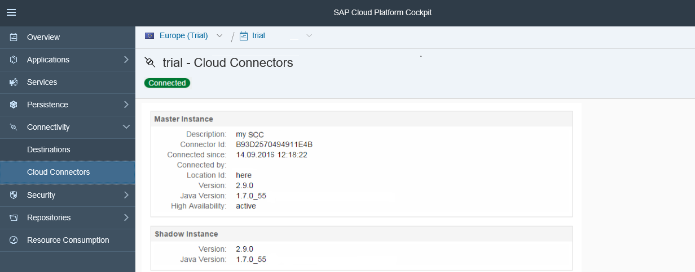

The cockpit provides a Connectivity view. Here an administrator can check the status of the Cloud connector attached in the current account, if any. The view provides information about the Cloud connector ID, version, used Java runtime, high availability setup, and some more details. Access is granted to administrators, developers and support users.

The Cloud connector offers various views for monitoring its activities and state. Choose one of the tabs on the Monitor screen:
Performance
All requests that went through the Cloud connector to the respective back-ends as specified through access control take a certain amount of time. You can check the duration of requests in a bar chart. The bar chart either shows the duration statistics for all virtual hosts or for a selected virtual host. The requests are not shown individually, but are clustered (assigned to buckets). Each of these buckets represents a time range.
For example, the first bucket contains all requests that took 10ms or less, the second one the requests that took longer than 10ms, but not longer than 20ms. The last bucket contains all requests that took longer than 5000ms.
Most Recent Requests
A table shows recorded requests starting with the most recent requests:
The number of displayed requests is limited to 50. You can either view all requests or just the ones destined for a certain virtual host, which you can select from a drop-down box. For all requests listed in the table you can view the details by selecting the respective table row:
In the example shown above the selected request took 25ms, to which the Cloud connector contributed 1ms. Opening a connection took 5ms. Processing at the back-end side consumed 7ms. Latency effects accounted for the remaining 12ms, while there was no SSO handling necessary and hence it took no time at all.
Top Time Consumers
This view is in major parts identical to Most Recent Requests. However, requests are not shown in order of appearance, but rather sorted by their duration (in descending order). Furthermore, you can delete top time consumers, which has no effect on most recent requests nor the performance overview.
Back-End Connections
This section shows a tabular overview of all active and idle connections, aggregated for each virtual host. By selecting a row (i.e. a virtual host) you can view the details of all active connections as well as a graphical summary of all idle connections. The graphical summary is an accumulative view of connections based on the time the connections have been idle.
The maximum idle time is displayed on the rightmost side of the horizontal axis. For any point t on that axis (representing a time value ranging between 0ms and the maximal idle time) the ordinate is the number of connections that have been idle for not more than t. You can click inside the graph area to view the respective abscissa t and ordinate.
Hardware Metrics
You can check the current state of critical system resources through pie charts. Furthermore, the history of CPU and memory usage (recorded in intervals of fifteen seconds) is displayed graphically.
The history graphs allow you to:
The entire historic data is always visible in the smaller bottom area right below the main graph.
In case you have zoomed in, an excerpt window in the bottom area shows you where you are in the main area with respect to the entire data. You can:
As a user of the Cloud connector, you might want to integrate some monitoring information in the monitoring tool you use. In future, the Cloud connector will offer more APIs for that purpose. Find below the APIs currently available.
With the health check API, it is possible to recognize that the Cloud connector is up and running. The purpose of this health check is only to verify that the Cloud connector is not down. It does not check any internal state, nor tunnel connection states. Thus, it is a quick check, which you can often execute.
| URL | Expected Return Code |
|---|---|
|
https://<scc_host>:<scc_port>/exposed?action=ping |
200 |